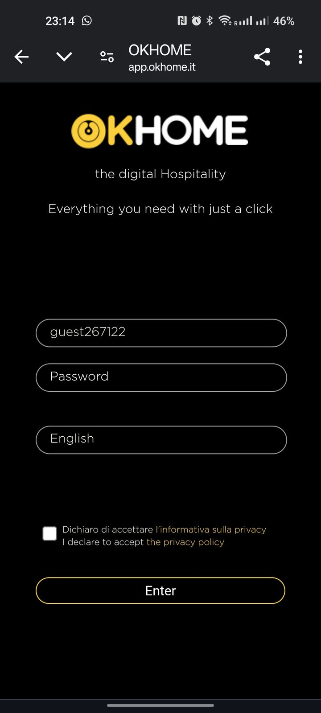
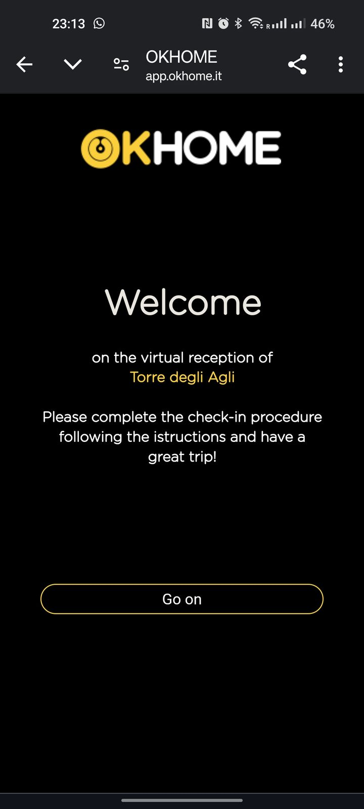
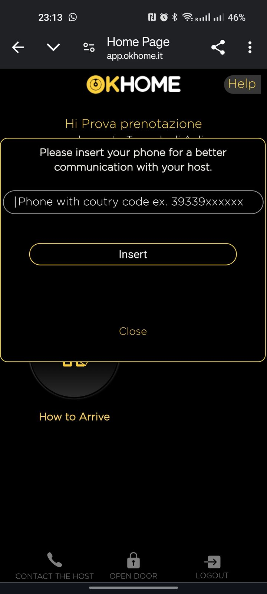
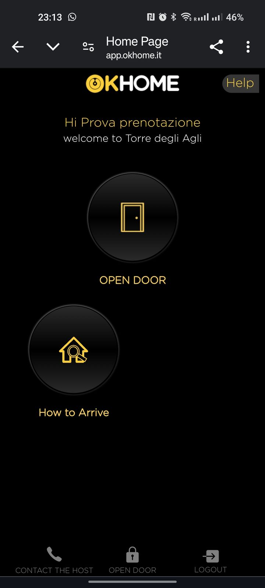
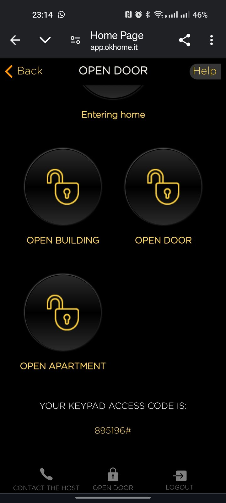
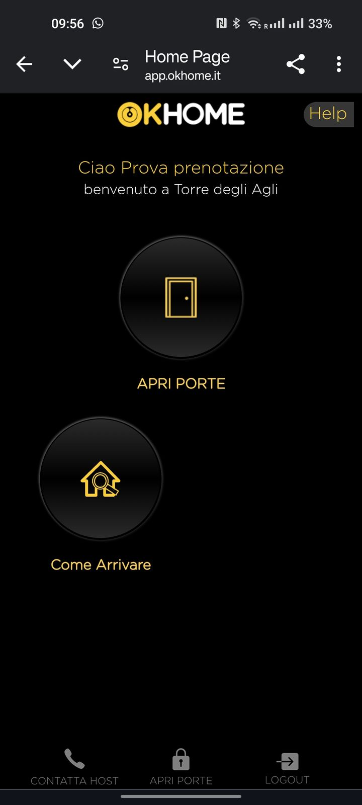
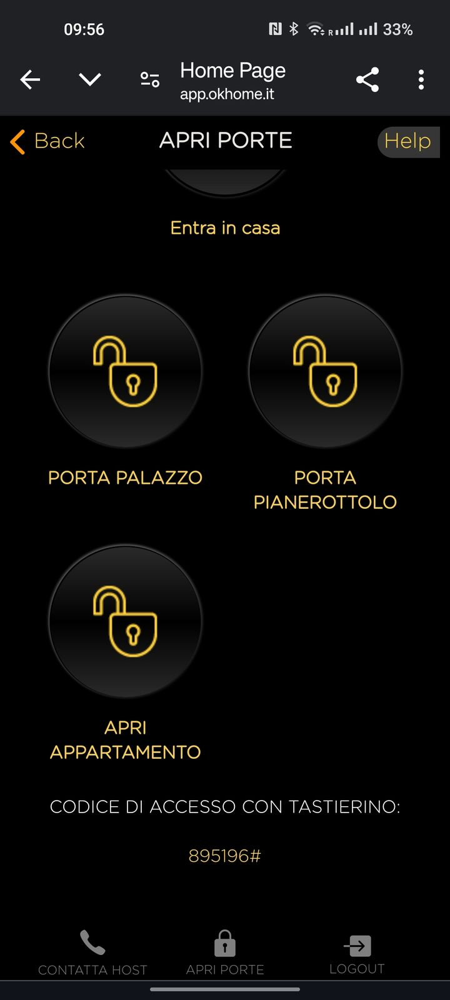

Ok Home instructions
Self check-in (via the Ok Home system)
- Receive access: you will receive an email with a link, the credentials for a web app, and a backup code for offline use.
- Log in: use the link and details provided to log into the web app.

- Door control: after logging in for the first time you will see a welcome page.

- You will then be asked to enter your phone number.

- You will finally land on the app’s Home page. Tap Open Door when you are near the door you want to open.

- You will see icons for three doors: OPEN BUILDING, OPEN DOOR and OPEN APARTMENT.

- OPEN BUILDING: opens the street door.
- OPEN DOOR: opens the landing door on the top floor (look for the "Torre degli Agli" doorplate).
- OPEN APARTMENT: opens the apartment door.
- Tap the corresponding icon to open the door you need.
- Notes: the street door takes 2-3 seconds to respond after you tap. Do not tap OPEN DOOR and OPEN APARTMENT too quickly one after the other once you are on the top floor. Use the Ok Home app only when you are near the door you want to open.
Istruzioni Ok Home
Check-in automatico (tramite il sistema Ok Home)
- Dettagli per accedere: riceverai un’email con un link, le credenziali per accedere a una web app e un codice di backup per l’uso offline.
- Accedi: usa il link e i dettagli forniti per accedere alla web app.
- Controllo delle porte: dopo il primo accesso vedrai una schermata di benvenuto.
- Ti verrà quindi chiesto di inserire il tuo numero di telefono.
- Dopo aver inserito il numero, entrerai nella home page della web app. Tocca Apri Porte quando sei vicino alla porta che vuoi aprire.

- Vedrai un’icona per ciascuna porta: PORTA PALAZZO, PORTA PIANEROTTOLO e APRI APPARTAMENTO.

- PORTA PALAZZO: apre la porta sulla strada.
- PORTA PIANEROTTOLO: apre la porta del pianerottolo all’ultimo piano (cerca la targhetta "Torre degli Agli").
- APRI APPARTAMENTO: apre la porta dell’appartamento.
- Tocca l’icona corrispondente per aprire la porta che ti serve.
- Note: la porta sulla strada impiega 2-3 secondi a rispondere al tocco. Una volta all’ultimo piano non toccare troppo velocemente PORTA PIANEROTTOLO e APRI APPARTAMENTO uno dopo l’altro. Usa l’app Ok Home solo quando sei vicino alla porta che vuoi aprire.
Instrucciones Ok Home
Check-in automático (a través del sistema Ok Home)
- Detalles de acceso: recibirás un correo electrónico con un enlace, las credenciales para acceder a una aplicación web y un código de respaldo para uso offline.
- Accede: utiliza el enlace y los detalles proporcionados para entrar en la aplicación web.
- Control de las puertas: tras iniciar sesión por primera vez verás una pantalla de bienvenida.
- Se te pedirá que introduzcas tu número de teléfono.
- Después de introducir tu número, accederás a la página principal de la aplicación web. Toca Abrir Puertas cuando estés cerca de la puerta que quieras abrir.
- Verás un icono para cada puerta: PUERTA DEL EDIFICIO, PUERTA DEL DESCANSILLO y ABRIR APARTAMENTO.
- PUERTA DEL EDIFICIO: abre la puerta de la calle.
- PUERTA DEL DESCANSILLO: abre la puerta del descansillo en el último piso (busca la placa "Torre degli Agli").
- ABRIR APARTAMENTO: abre la puerta del apartamento.
- Toca el icono correspondiente para abrir la puerta que necesitas.
- Notas: la puerta de la calle tarda de 2 a 3 segundos en responder al toque. Una vez en el último piso, no toques demasiado rápido PUERTA DEL DESCANSILLO y ABRIR APARTAMENTO uno tras otro. Usa la aplicación Ok Home solo cuando estés cerca de la puerta que quieras abrir.
Instructions Ok Home
Check-in automatique (via le système Ok Home)
- Informations d’accès : vous recevrez un e-mail avec un lien, les identifiants pour accéder à une application web et un code de secours pour l’utilisation hors ligne.
- Connexion : utilisez le lien et les informations fournies pour accéder à l’application web.
- Contrôle des portes : après la première connexion, vous verrez un écran de bienvenue.
- Il vous sera ensuite demandé de saisir votre numéro de téléphone.
- Après avoir saisi le numéro, vous arriverez sur la page d’accueil de l’application web. Touchez Apri Porte (Ouvrir les portes) quand vous êtes près de la porte que vous voulez ouvrir.
- Vous verrez une icône pour chaque porte : PORTA PALAZZO (porte de l’immeuble), PORTA PIANEROTTOLO (porte du palier) et APRI APPARTAMENTO (ouvrir l’appartement).
- PORTA PALAZZO : ouvre la porte sur la rue.
- PORTA PIANEROTTOLO : ouvre la porte du palier au dernier étage (cherchez la plaque « Torre degli Agli »).
- APRI APPARTAMENTO : ouvre la porte de l’appartement.
- Touchez l’icône correspondante pour ouvrir la porte dont vous avez besoin.
- Remarques : la porte sur la rue met 2-3 secondes à réagir. Une fois au dernier étage, ne touchez pas trop vite PORTA PIANEROTTOLO et APRI APPARTAMENTO l’un après l’autre. Utilisez l’application Ok Home uniquement quand vous êtes près de la porte que vous voulez ouvrir.